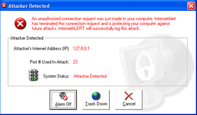

<meta charset="utf-8">  <table border="0" cellpadding="0" cellspacing="0" width="80%" align="center">
    <tr>
      <td width="85%" bgcolor="#CCCCCC" cellpadding="5" cellspacing="5">
        <table border="1" align="center" width="100%">
          <tr>
            <td bgcolor="#6487dc">
              <p align="center"><font size="3" face="Arial" color="#FFFFFF"></font></td>
          </tr>
        </table>
        
        <p align="center"></p>
        <p align="center" class="MsoNormal"><b><font size="3" face="Arial">InternetALERT Security
        Service</font></b></p>
        <blockquote>
          <p class="MsoNormal"><font face="Arial" size="2">The InternetALERT Security
              Service (IAS) is the brand new version of our popular InternetALERT
              program that can prevent attacks on your computer from hackers. The
              purpose
              of this guide is to show you the new and exciting features that this
              version of the program has to offer.</font></p>
          <p class="MsoNormal"><font size="2" face="Arial, Helvetica, sans-serif">If you are a current member of our InternetALERT
              service with a yearly renewing account, you can download this new version
              for free! Just <a href="mailto:alerthelp@bonzi.com">send us an email</a> and we'll be happy to help you download.</font></p>
        </blockquote>        <p class="MsoBodyTextIndent"><font face="Arial" size="2"><o:p></o:p>
        </font></p>
        <blockquote>
          <p class="MsoBodyTextIndent" style="margin-left:0in"><b><font face="Arial" size="2">What
            is the InternetALERT Security Service?</font></b></p>
          <p class="MsoBodyTextIndent"><font size="2" face="Arial, Helvetica, sans-serif">InternetALERT
              Security Service, once installed, will notify you if someone is
            breaking into your computer, stop them dead in their tracks, and build
              a visual map showing you the Attacker's ISP (Internet Service Provider)!
              With InternetALERT Security Service, you can  connect to the
            Internet with the comfort  of knowing that no one from
          the Internet can access your computer without your knowledge or permission.</font></p>
        </blockquote>        <p class="MsoBodyTextIndent"><i><font face="Arial" size="2"><o:p>
        </o:p>
        </font></i></p>
        <blockquote>
          <p class="MsoNormalIndent"><b><font face="Arial" size="2">How does the
          InternetALERT Security Service work?<o:p>
          </o:p>
        </font></b></p>
          <p class="MsoEnvelopeReturn"><font face="Arial" size="2">IAS runs on
                your computer in the background and monitors the ports on your computer
                that allow Internet traffic to flow into and out of your system.
                Any time an access attempt is made to your computer and your computer
                did not initiate the access attempt, IAS will jump in, stop the access
                attempt that was made, and log the information about the computer
                that made the attempt. With this information you have everything
                you need to track down the attacker!</font></p>
        </blockquote>        <p class="MsoEnvelopeReturn" style="margin-left:.5in"><font face="Arial" size="2">&nbsp;<o:p>
        </o:p>
        </font></p>
        <blockquote>
          <p class="MsoEnvelopeReturn"><b><font face="Arial" size="2">What do I
                  do when I get an attack?<o:p>
        &nbsp;</font></b></p>
        </blockquote>        <p align="center" class="MsoEnvelopeReturn"><b><font size="2" face="Arial"></font></b></p>        
        <blockquote>
          <p class="MsoEnvelopeReturn"><font size="2" face="Arial">When you get
                an attack, IAS will pop up a window on your screen that shows you
                that an intrusion into your computer was attempted. When you see
                this screen, you can click <strong>Alarm Off </strong>to silence
                the alarm, click <strong>Track Down</strong> to see the information
                about the attack, and click the <strong>Cancel</strong> button
                to close the attack window.</font></p>
          <p class="MsoEnvelopeReturn"><font size="2" face="Arial">With the information
              on the &quot;Track Down&quot; screen you have all you need to contact the
              administrator in charge of the computer network where the attack
              originated. By sending a report of the incident to the administrator
              they will have everything they need to track down the offender
              and put a stop to their behavior.</font></p>
        </blockquote>        <p class="MsoEnvelopeReturn" style="margin-left:.5in"><font face="Arial" size="2">&nbsp;<o:p>
        </o:p>
        </font></p>
        <blockquote>
          <p class="MsoEnvelopeReturn"><b><font face="Arial" size="2">What
            function does each tab on the InternetALERT Security Service
                  window perform?</font></b></p>
        </blockquote>        
        <blockquote>
          <blockquote>
            <p class="MsoEnvelopeReturn"><font face="Arial" size="2">The function
                of each tab on the program screen is as follows:</font></p>
            <p></p>
            <p><font face="Arial" size="2"><b>Port
                              Manager</b>
        – By default, InternetALERT Security Service will protect all of the
                        most common ports that your computer will use to access the Internet.
                        If you run any non-standard Internet software and you find that you need
                        to protect the port(s) that it runs on, you can come here to add and
                        edit the list of ports that are protected by IAS.</font></p>
            <p></p>
            <p><font face="Arial" size="2"><b>Security
                        News</b> – By default, IAS will use slide-up windows above your clock (they are
                  called &quot;toast&quot;) to notify you of security news and other stories
                  pertaining to computer security, protection, virus threats, etc. If you
                  would like
                  to turn this feature off, just uncheck the button on this tab.</font></p>
            <p></p>
            <p><font face="Arial" size="2"><b>Settings</b> – Selecting
                          this tab will take you to the InternetALERT Security Service
                          configuration screen. On this screen you can change the setting
                          that
                  tells IAS how you connect your computer to the Internet and you can change
                  the alarm sound that IAS uses when you receive an attack. You can also
                  turn off the alarm so that you only get a popup warning of the attack
                  and you can also uncheck the last box on this tab to tell IAS not to
                  start up every time you start Windows!</font></p>
            <p></p>
            <p><font face="Arial" size="2"><b>Help</b> – This
                          tab is where to go if you have a question about the program or
                  a technical support issue. Just click on the proper link to update your
                  account information, visit the technical support web site, or send an
                  e-mail message to our customer service department.</font></p>
            <p><font size="2" face="Arial"></font></p>
            <p><font face="Arial" size="2"><b>System
                        Status</b> – This tab on the IAS program screen shows the current status of InternetALERT
                  Security Service. The address of your computer and the status of your
                  protection (active versus inactive) are shown in the first section. Under
                  that you will see one of two things. You will either see the time remaining
                  on your free trial subscription or you will see your membership information
                  (indicating that you have an active IAS membership). Next to that you
                  will have a &quot;Purchase&quot; button if you have not purchased the program and
                  you will also have a button you can click on to &quot;Disable&quot; your
                  protection should you need to do so.</font></p>
            <p><font size="2" face="Arial"></font></p>
            <p><font face="Arial" size="2"><b>Simulate
                        An Attack</b> – This is where to go if you have never seen an attack
                        and you want to see what happens when you get one. Just click on
                        the button to learn
                  exactly what would happen were your computer to ever be attacked.</font></p>
            <p><font size="2" face="Arial"></font></p>
            <p><font face="Arial" size="2"><b>Track
                        Down Attacker (Logs)</b> – This is where to go if you want to research any attacks you have already
                  received. Any attack recorded by InternetALERT Security Service will
                  be shown in the list on this tab. From this tab you can double click
                  on the attack to see all of the information about it. Highlight an attack
                  and click on the &quot;Track Down&quot; button to find out where the computer that
                  attacked you was connected to the Internet. NOTE: Simulated attacks will
                  not show a location and you cannot &quot;track down&quot; the attack
                  because it was a test attack that was initiated from you own computer
                  at address
                  127.0.0.1.</font></p>
          </blockquote>
          <p><font face="Arial" size="2">If
            you have any further questions about this product or need technical
            help, please visit us on the web at <a href="bonzi-page-64.html">http://www.bonzi.com/support.htm</a>.<span style="mso-spacerun: yes">&nbsp;
          </span>Click on the link to InternetALERT Security Service. We look forward
          to hearing from you!</font></p>
          <p class="MsoEnvelopeReturn"><font face="Arial" size="2">Sincerely,</font></p>
          <p class="MsoEnvelopeReturn" style="word-spacing: 0; line-height: 100%; margin-top: 0; margin-bottom: 0"><b><font face="Arial"><font size="2">The
          BONZI Software Customer Support Team</font><o:p></font></b>&nbsp;<o:p>
          </o:p>
          </p>
        </blockquote>        
      </td>
  </tr>
  </table>
